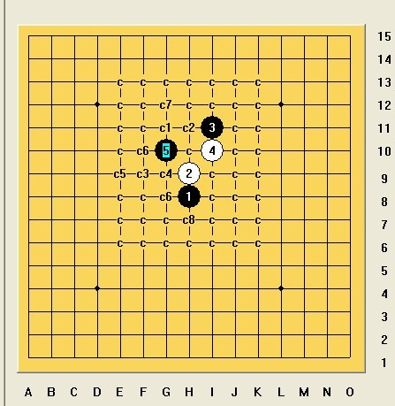

这个溪月刀的6不知道有人地毯了没？
#1 这个溪月刀的6不知道有人地毯了没？ 作者：来来往往 发表时间：2012-7-25 16:18:49
溪月刀这个4，下这个5的好像还有不少，我拆了下，这个唯一的6没搞定，不知道哪位高手完成了？#2 Re:这个溪月刀的6不知道有人地毯了没？ 作者：来来往往 发表时间：2012-7-25 16:23:44
还有这个溪月刀的5，这个唯一的6估计是没法地毯，不过还是问下。#3 Re:这个溪月刀的6不知道有人地毯了没？ 作者：来来往往 发表时间：2012-7-25 16:34:06
这个5也是通花月的，这三个6是正确的，个人感觉是白很强，但不知道哪位研究过，是不是三个点黑都无法必杀？
#4 Re:这个溪月刀的6不知道有人地毯了没？ 作者：山城刀客 发表时间：2012-7-25 19:00:31
 0.rar
0.rar这个帮你简单搞定。
#5 Re:这个溪月刀的6不知道有人地毯了没？ 作者：山城刀客 发表时间：2012-7-25 19:03:13
这个毛毯，地毯有望的，你自己拆拆吧！
别的都没戏，劝你放弃吧！
另外，以后摆棋，建议你2走1的上下，走左右很别扭，不便于观察！
［ 小小亦默 于 2012-7-26 2:47:14 时花20金币送鲜花一朵］
［ 来来往往 于 2012-7-26 9:23:35 时花20金币送鲜花一朵］
［ 来来往往 于 2012-7-26 9:23:35 时花20金币送鲜花一朵］
［ 来来往往 于 2012-7-26 9:23:35 时花20金币送鲜花一朵］
［ 来来往往 于 2012-7-26 9:23:35 时花20金币送鲜花一朵］
［ 来来往往 于 2012-7-26 9:23:35 时花20金币送鲜花一朵］
#6 Re:这个溪月刀的6不知道有人地毯了没？ 作者：日月丽天 发表时间：2012-7-26 8:36:51
第一副图的5，去年在做这个4的2打时，看过黑必胜不好搞，这个6就是最强6
后来选择这个5做的最后2打必胜地毯
#7 Re:这个溪月刀的6不知道有人地毯了没？ 作者：来来往往 发表时间：2012-7-26 9:20:54
原来真如我所想啊，我说谱怎么舍弃这个容易想到的点而索取八卦点呢。#8 Re:这个溪月刀的6不知道有人地毯了没？ 作者：来来往往 发表时间：2013-2-28 15:11:13
#9 Re:这个溪月刀的6不知道有人地毯了没？ 作者：来来往往 发表时间：2013-2-28 15:13:13
#10 Re:这个溪月刀的6不知道有人地毯了没？ 作者：光明静心 发表时间：2013-2-28 17:40:37
可行的路，走到后面难走了。
#11 Re:这个溪月刀的6不知道有人地毯了没？ 作者：爱好者友 发表时间：2013-3-1 18:02:50
下了，看看吧，谢谢